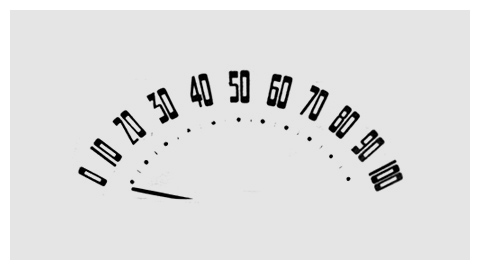
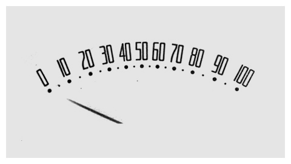
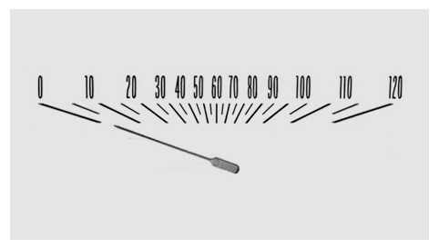
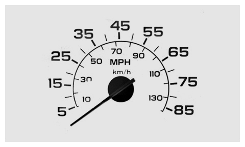
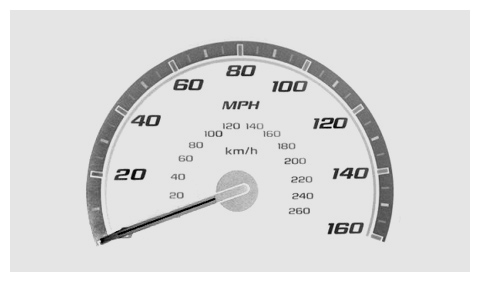
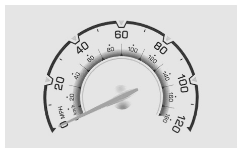
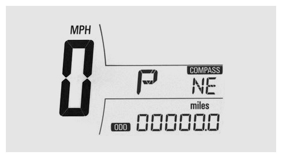

Chevrolet 1941 Truck

Chevrolet 1959 Apache Truck

Chevrolet 1966 Chevy Nova

Chevrolet 1985 Silverado

Chevrolet 2008 Cobalt

Chevrolet 2010 Spark

Chevrolet 2011 Sonic
Evolution of Chevrolet’s Speedometer Design
Designer and blogger Christian Annyas put together a great collection of Chevy’s speedometer design from 1941 to today. How many years do you think it will take for someone at Chevrolet regret the “futuristic" 2011 Sonic design decision?